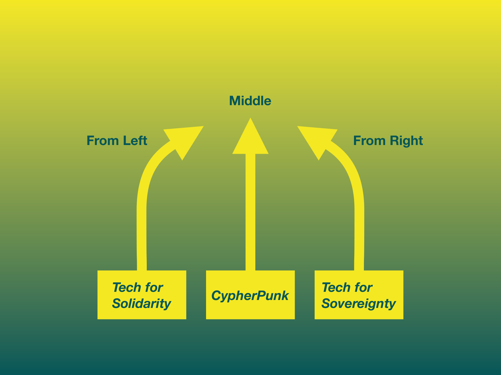
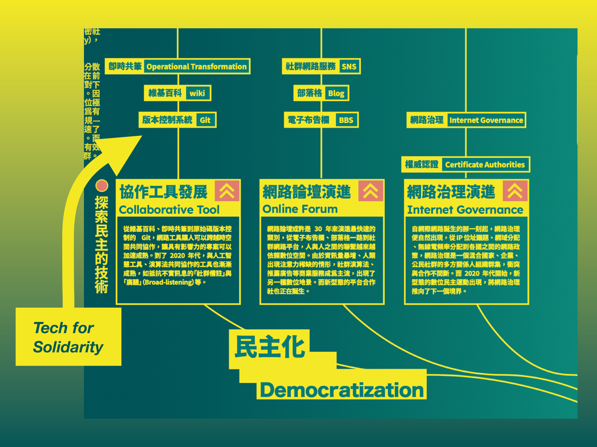
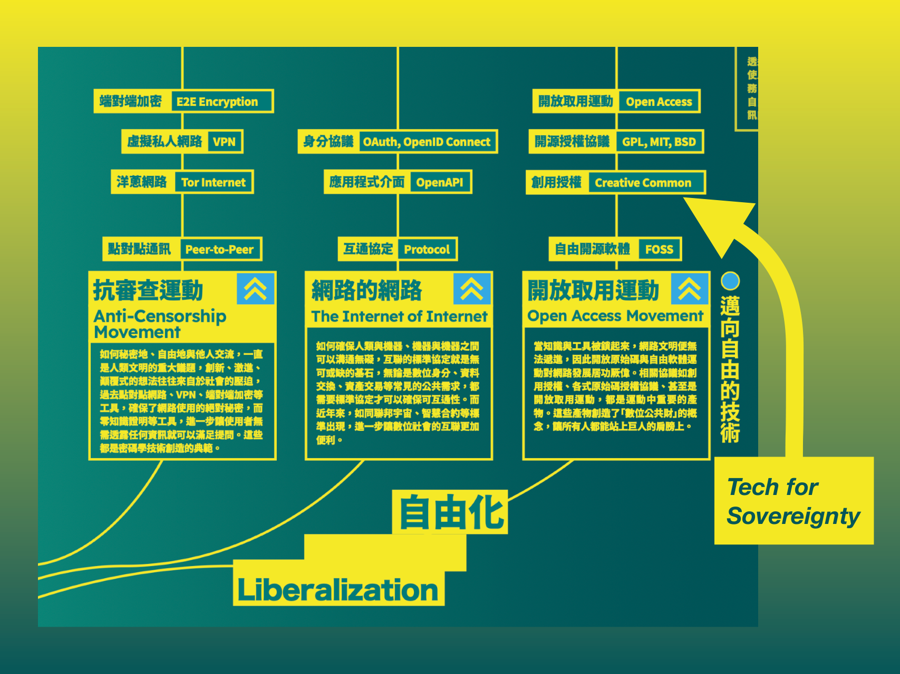
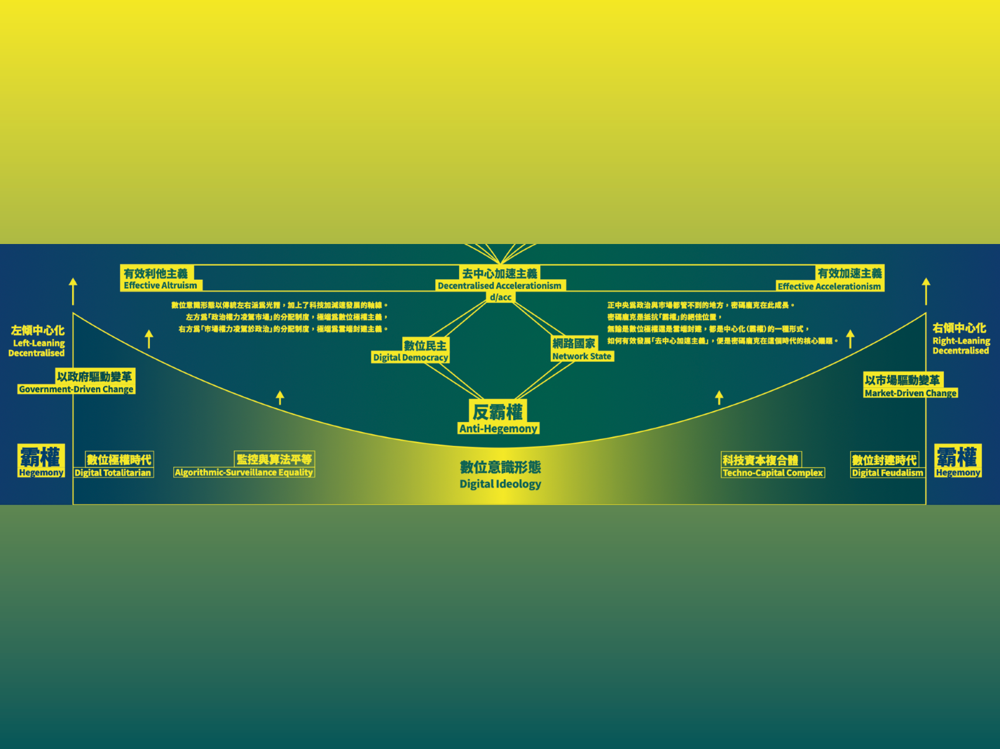
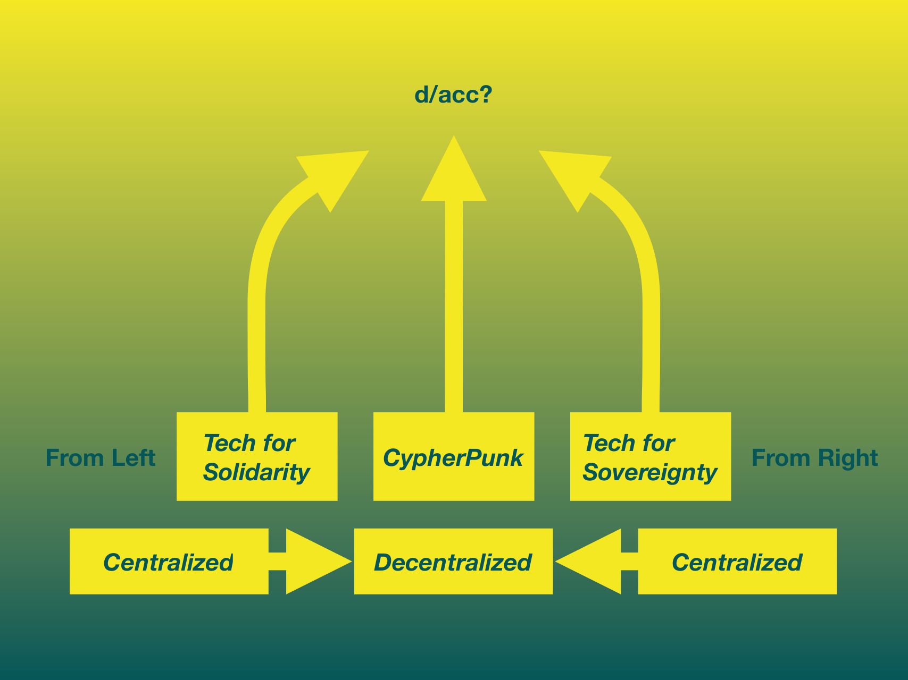
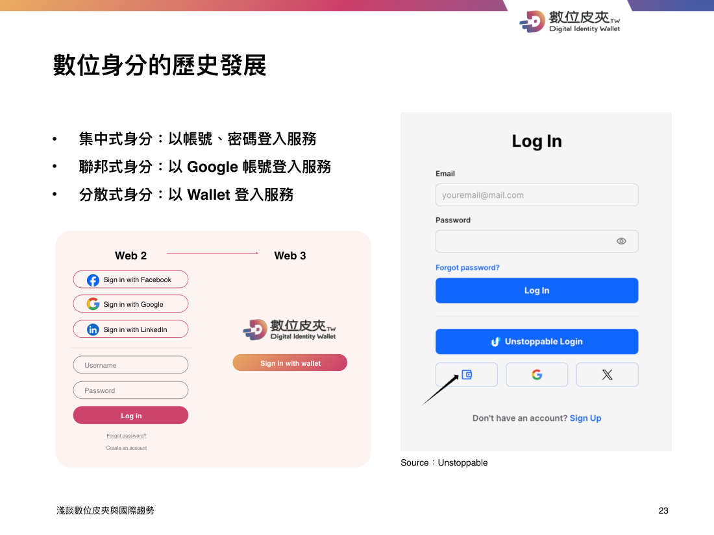
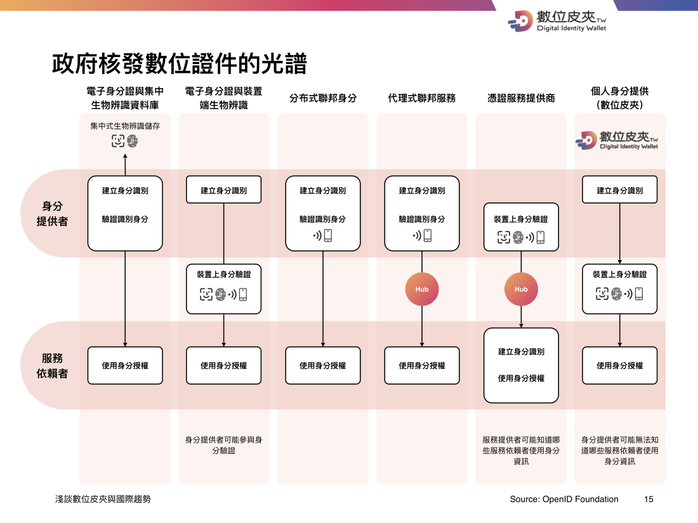
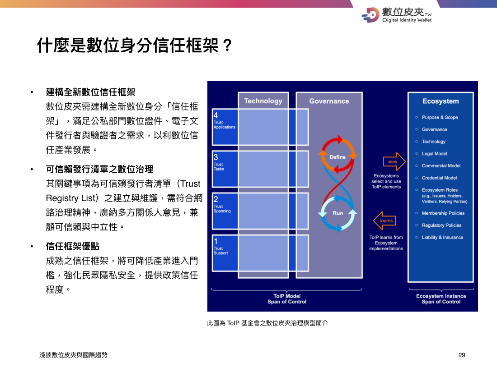

Liberty on the Scales:
Safe Services or a Free Internet?
MANIFESTO
在公務體系裡做數位建設 ／ 在開放原始碼社群裡寫扣 ／ 在抗審查平台裡研究審查
// whoami
// past
前 醫師
前 公務員
數位部「多元宇宙科」
2023 – 2025.08
// now
Matters Lab 平台 General Manager
密碼龐克田野
拉美 · 台北 · 清邁
// fellow
// next
預備研究生
// agenda
從 1993 Manifesto 到
當代數位人權的倡議。
Eric Hughes · Vitalik · d/acc
Amir Taaki · Santi Siri · Balaji
CDA §230 還有效嗎？
抗審查平台為什麼必須開發審查演算法？
DSA · OSA · Matters Lab
蜜罐悖論 · 演算法權力
「我已滿 18 歲」真的有效嗎？
個資自主 vs 國家安全。
25 國年齡驗證 · 5CA 外洩
ZK · DID · VC · 數位皮夾
§ 01
"Cypherpunks write code." — Eric Hughes · A Cypherpunk's Manifesto · 1993
// 1993 · a cypherpunk's manifesto
[1] Privacy is necessary for an open society in the electronic age.
[2] Privacy is the power to selectively reveal oneself to the world.
[3] Cypherpunks write code.
// 數位轉型的二元路徑
From the Left · Tech for Solidarity
從集體協作、論壇、治理出發，「民主化」現有的權力結構。
From the Right · Tech for Sovereignty
從個人自由、抗審查、開放取用出發，「自由化」個體的選擇空間。

// from the left · tech for solidarity

三條子路徑共同把協作能力從少數人手中拉到所有人手中：
// from the right · tech for sovereignty
把抗審查、互通、可分叉當作出廠預設：


// the middle axis · anti-hegemony
左、中、右三條路最終都指向反霸權——不是反國家，也不是反市場，而是反「任何單一節點能定義所有人遊戲規則」。
// 2023 · vitalik buterin
Vitalik 在 2023 提出 d/acc，把「加速主義」拉回密碼龐克的方法論：
// HOOK
「d/acc 的 d，無論是 defense、democracy 還是 decentralization，全部都可以創造社會韌性。」
— mashbean · d/acc Argentina 演講 · 2025-11

// 2020s · cypherpunks in the wild
// model 01
集體遊牧版本的「數位遊牧」。 以兩到八週為單位聚集數百名工程師、研究者、政策人，做真實的小社會實驗。
Zuzalu (Vitalik, 黑山 2023)
Edge City · Mu · Frontier Tower
// model 02
直接把密碼學嫁接到既有社會運動上。
Amir Taaki · Bitcoin 早期核心，2015 投入敘利亞羅賈瓦自治區革命
Santi Siri · 2013 創辦阿根廷「網路黨」，後續 Democracy Earth、Proof of Humanity
// model 03
從生活共同體開始，目標是國際承認的法律實體。
Balaji Srinivasan · 《網路國家》
新加坡網路學校
⚠ 警告：右翼版本可能與威權體制趨同
// transition
下半節，我們進入一場 5 年的平台戰爭實錄。
§ 02
"大家討厭 Facebook。
但大家還是使用 Facebook。"
— 張潔平 · Matters Lab
// 1996 · communications decency act
"No provider or user of an interactive computer service shall be treated as the publisher or speaker of any information provided by another information content provider."
— 47 U.S.C. § 230 (c)(1)
// 平台不為使用者內容負責
使 YouTube、Facebook、Reddit、Wikipedia、PTT 都能存在的法律前提。沒有 §230，就沒有現代 UGC 平台。
// good samaritan 條款
平台「善意」做內容審查時，不會因此被視為發布者——這保住了平台同時擁有「不審查」與「審查」的法律自由。
// 30 years later · §230 修法壓力
// 從左方
// 從右方
// 2024-02 · 歐盟全面生效
// 三類處分
第三類是真正的權力中心：
「看不見」比「刪掉」更便宜。
// VLOPs 義務
月活 > 4500 萬 的「超大型線上平台」
承擔：
// 罰則
6%全球年營業額罰款上限
2024 X / TikTok / Meta 都已被開案調查
// 全球平台立法浪潮
三年內全球至少 25 國 推動相關立法。共通主軸：從「平台不負責」轉向「平台預先攔截」。
// 真正的權力中心
「平台真正能控制的，是公共入口與排序，不是內容本體。」
— g0v Summit 2026 · Matters Lab Workshop
內容用 IPFS、Tor 還救得回來。
但「沒有人看到」這件事——憲法言論自由保障不到。
// downrank / limit / shadowban
傳統審查： 內容被刪除 → 使用者收到通知 → 可以申訴 → 可以提告 → 有司法救濟路徑
演算法降權： 內容仍在 → 使用者沒收到通知 → 不知道發生了什麼 → 無法申訴 → 沒有司法路徑
// 法律難題
DSA Art. 17 規定平台必須給「statement of reasons」——
但「限流」是否觸發？
「不推薦」算不算限制？
「演算法調整」要不要說明？
這是 2026 仍未解的執法前線。
// case study · matters lab (2018–)
2018 在香港創辦，主打：
2020-07 法人主體遷美國
港版國安法通過後，把法律風險帶離香港、帶離中國司法管轄。
這是「平台抗審查」第一個被迫付的成本：
離開使用者所在的物理地理。
// 5 years of attacks
// the uncomfortable numbers
// honeypot paradox
「攻擊者並非直接入侵系統，而是透過大量垃圾與詐騙內容，
觸發民主社會用以維護安全的自動化機制。」
— mashbean · 抗審查出版平台的市場悖論與蜜罐悖論 · 2025-12
“Mass reporting is particularly challenging... because of its weaponization of platform infrastructures for community governance.”Colten Meisner, Policy & Internet, 2023
// matters · governance tooling 2019→2024
人工審查 · 2019
所有檢舉送到後台，編輯團隊一條條看。延遲高、不可規模化。
帳號註銷 · 2020
硬手段：直接刪帳號。但「永久」的成本太高，誤殺難以挽回。
小黑屋（可逆隔離）· 2023
不刪除、不註銷——只是「公共面排除」。可恢復、可申訴。
模型守門 · 2024 → spam-detection-scaffold
三層：① 語義（BERT 分類）② 行為（AWS Lambda 偵測模式）③ 信任評分。
// content resilience · layered architecture
// layer 03 · 可被收編
matters.town 首頁、搜尋、推薦——可以被法院、ISP、平台政策影響。
這就是 §230 / DSA 主要管制的層級。
// layer 02 · 不可下架
所有文章寫上 IPFS，由分散式節點固定。
只要還有一個節點固定，內容就活著。
// layer 01 · 另闢蹊徑
這是密碼龐克「分散信任」思想在平台層的具體實作。
// market paradox
「邊緣地帶的人們有需求，不只是因為便利， 因為另一種選擇是沉默、自我審查。」
// 邊緣社群的需求結構
道德/生存需求 = 高 市場購買力 = 低且分散 使用者支付意願 = 低（因經濟弱勢、匿名需求）
// 主流市場的不可達
主流使用者沒有「沉默成本」
→ Facebook 夠用就好
→ 抗審查平台網路效應永遠打不贏通用大平台
// builder paradox
// risk 01 · 商業失敗
市場購買力分散；
主流使用者不來；
VC 看不到 10x 出場路徑。
Mirror、Paragraph、Lens Protocol、Matters——這些平台都還在尋找可持續的營收模型。
// risk 02 · 人身安全
敵對方不是市場對手，而是國家——
創辦人面對的不是訴訟，而是入境黑名單、家族騷擾、刑事追訴。
「隱私不是犯罪。對我們而言，這不只是口號，而是現實世界中真實發生過的事。」
// dual role
// 被治理者
2025-01 · 農曆年期間，Matters 被詐騙文洗版。
觸發台灣 ISP 層級自動防詐封鎖。
整站對台灣使用者連續 3 天無法訪問。
Matters 在這場戰役是受害方。
// 治理者
同一週，Matters 一如既往的審查服務為： · 帳號隔離 · 文章降權 · 模型自動判定 對使用者來說，Matters 是治理方。
// open source ≠ open process
理論上：
所有程式碼、所有參數、所有判斷規則——全部公開。
現實上：
spam-detection 的閾值一旦公開，攻擊者就能調整輸入避開偵測。
折衷：分層開源——
程式碼公開，但敏感參數延遲發布 6–12 個月。
「sustaining 一個 censorship-resistant 平台，
很多時候要犧牲透明度來換安全。」
// solution 01
把「抗審查」做成可組合元件——身分、簽章、儲存、發布、訂閱——讓任何一個既有平台都能拿來用，而不是建一個新的孤島平台和 Facebook 競爭。
// solution 02
「免費」服務的真正成本，是使用者成為被監控的商品。
替代方案：創作者經濟、訂閱、社群代幣、公共財募款——讓使用者付得起，但。
但要小心 incentive misalignment：「沒有審查」如果變成 Matters 的隱性 incentive，就會吸引以「絕對自由」為號召的詐騙者來定居。
// solution 03
「真正困難的，從來不是技術。 是習慣、便利、網路效應。」
// solution 04
如果連建造者自己都不日常使用，這個工具就還沒準備好給社運工作者、調查記者、海外異議人士用。
這也是密碼龐克最早的方法論——
「Cypherpunks 自己 PGP 加密所有信件」，不只是寫程式給別人用。
// transition
「年齡驗證可能從『內容控制』，
滑坡為『通用身分閘口』。」
— mashbean · Allen Lab Share · 2026-04
§ 03
"我已滿 18 歲"——
真的有效嗎？
// 30-year evolution

① 集中式 · 帳號 + 密碼
每個服務都要重新註冊；資料庫易外洩
② 聯邦式 · Google / Facebook 登入
便利，但把所有身分軌跡集中到 2-3 家平台
③ 分散式 · Wallet 登入（SSI）
使用者自己持有憑證；簽發者不再記錄使用紀錄
// openid foundation

// human-centric digital identity
// principle 01
身分自古以來都是模糊定義，介於法定與約定俗成之間。
數位社會中，法定身分、企業服務帳號、社會關係已高度重疊——卻仍沒有夠成熟、安全、易用的 UX。
// principle 02
Self-sovereign Identity——
使用者持有憑證、決定何時揭露、不可被第三方追蹤。
降低數位足跡招致監控的可能。
// the wave
反例：日本 IDPA 2025-04 刻意不包年齡驗證
已撤：南韓遊戲宵禁 2021 廢除（10 年後可逆轉）
暫緩：台灣 New eID 2020 因民眾反彈擱置
// 2025-06-27 · u.s. supreme court
最高法院以 6:3 認定德州色情站年齡驗證法合憲——
翻轉 30 年來「成人也有匿名瀏覽權」的判例傳統。
Thomas 主筆，採「中度審查」而非嚴格審查標準。
Kagan / Sotomayor / Jackson 異議：
「這條路一旦開通，年齡閘口將從色情擴及全網。」
// EFF 評論
「踐踏言論自由並破壞隱私。」
Electronic Frontier Foundation · 2025-06-27
後續觀察：
路易斯安那 Pornhub 流量 ↓ 80%，
但使用者轉用 VPN——
真正完成的是培訓全民學會繞過審查。
// 滑坡論證
「基礎設施一旦建成，
新政策就會傾向搭便車。」
// the protection paradox
// 聯合國兒童權利公約 § 16
明文保障兒童的隱私權。
當年齡驗證要求蒐集臉部估算、政府證件、地理位置——它本身就是侵害。
// 實效檢驗
中國防沉迷系統部署超過 5 年——
~77% 未成年人用借用帳號規避
換句話說：把 75% 的成年人推進高侵入身分蒐集，
只為了攔住 23% 真正自己驗證的未成年人。
// the honeypot is already breached
// 2025-10 · discord × 5ca
~70,000政府證件外洩
Discord 委外的客服廠商 5CA 遭駭，
洩漏使用者上傳的政府證件副本。
// 2025-07 · tea app
72,000張使用者照片
女性匿名約會評價 app；2024 年也曾被 4chan 肉搜。
// au10tix
大型身分驗證商，憑證曝露超過一年未察覺。
// 真實效果
路易斯安那 Pornhub 流量 ↓80%
→ 使用者轉用 VPN
→ 培訓全民學會繞過。
// what digital identity can actually prove
// proof 01
你是誰
（姓名、身分證號）
// proof 02
你具備某種屬性
（年齡、學歷、職業）
// proof 03
你是一個人
（不是機器人、不是分身）
// proof 04
你有資格參與
（不需揭露你是誰）
「可問責並不需要以實名為前提。」
// the privacy-friendly stack
// zk proof · zero-knowledge
證明你符合條件——不揭露條件值本身。「我滿 18 歲」可以為真，而不暴露出生年月日。
// DID · W3C 分散式識別符
使用者控制的識別字串，不依附任何單一發行者。
// VC · W3C 可驗證憑證 v2.0 (2025)
由發行者簽章的可驗證資料；使用者選擇性揭露欄位。
// OID4VC / OID4VP + no-phone-home
呈現協定。「不回家通報」：簽發者不能追蹤這張憑證被用在哪裡。
// taiwan · proof of concept 2025
用內政部憑證 (MOICA) 簽出 ZK 證明，讓 PTT 帳號取得「藍勾勾」——
表示這個帳號的後面是一個唯一的台灣公民。
這示範了一件事：
「具公信力的政府身分」
不必等於「政府能追蹤你做什麼」。
問題只剩一個：
政府願不願意讓使用者用這種方式持有他發出的憑證？
// 2025-26 · DID/VC 上公共鏈案例
// 不丹
2025-10 錨定 Ethereum 主網——全球首例國家數位身分上以太坊。
National Digital Identity, Bhutan
// 台灣
數位皮夾信任清單 2025–26 規劃上公共鏈，讓任何驗證者都能離線驗證簽發者身分。
// 阿根廷
布宜諾斯艾利斯市政府的數位身分系統，上 ZKsync L2。
// taiwan digital identity wallet
2023 啟動規劃
2026-04 開源（發行者 / 驗證者 / 行動 App）
2026-12 信任清單治理機制上線預估
三個關鍵字：
· 可組合
· 可跨境（國際互通）
· 非特許（任何符合標準的單位皆可發行）
// ToIP

// the three open problems
// challenge 01
// challenge 02
// challenge 03
少數人有、多數人沒有；發行者不發、驗證者不接。
需要關鍵的第一個 killer use case。
// the new gatekeeper risk
即便每張憑證都是 SSI、ZK、no-phone-home——
只要呈現介面掌握在 2–3 家公司手裡：
那麼，比國家更危險的，是平台級身分閘口。
「我們實際上正把國家的數位主權與產業競爭空間，
逐步外包給兩三家公司。」
// what other democracies are doing
// 瑞士
2025-09-28 全民公投通過（50.4%）。
三大條款明訂於法：
· 開源 mandatory
· 不可連結 (unlinkability)
· 國家簽發、使用者持有
// 歐盟
2027 年前所有會員國須提供，免費。
強制支援 ZKP；丹麥/法國/希臘/義大利/西班牙已試點。
// 美國猶他
把數位身分定位為自然人固有權利。
「州政府不再宣稱『我發給你一個身分』，
而是『我承認你主張的身分，並為其背書』。」
// taiwan-specific context
// 失敗經驗
民眾反彈 + 資安疑慮。
留下的教訓：沒有公開治理討論，就不會有信任基礎。
// 既有制度
「事前摩擦」高（讀卡機、實體申辦），但制度根基穩定。
20+ 年信任資本未被破壞。
// 新公共建設
「運作中摩擦」低，與 MOICA 互補而非替代。
有機會成為民主陣營技術夥伴的台灣牌。
台灣從「編戶齊民」的中央集權傳統，到「以人為本」的現代數位身分——
這個歷史轉折是未完成的工程。
// where the real fight is
每個國家的數位身分白皮書都寫：
但採購規格書裡通常寫：
「需提供使用紀錄查詢介面」
「需保留 5 年稽核資料」
這是密碼龐克 2026 真正的戰場。
「個人自主權並非與國家主權對立——反而是國家數位主權的必要條件。」
// the next decade · 2026 → 2036
// 1993 · the new yorker
「在網路上，
沒人知道你是一條狗。」
Peter Steiner · 1993-07-05
密碼龐克時代的隱私承諾
// 2025 · the ai era
「在網路上，
沒人知道你是人類或機器人。」
AI Agent 時代的代理身分難題：
從「誰登入」轉為「誰可代表誰行動」
這就是為什麼數位身分基礎建設不能等到下個世代再蓋——
它要在 AI Agent 大規模上線之前到位，否則我們會失去區分「人」與「代理人」的所有工具。
// recap
// § 01
抗審查不是反法律，
而是憲法之外的第三條路。
// § 02
抗審查與審查是一體兩面，
治理 = collective survival。
// § 03
以人為本的 SSI
是台灣的時代機會。
"Privacy is the power to selectively reveal oneself to the world."
// 延伸閱讀 · take-home
// 密碼龐克 / 平台
// 數位身分 / 年齡驗證
// 法源對照
// US
1996
強避風港 + Good Samaritan
修法壓力：KOSA、EARN IT、FOSTA-SESTA
// EU
2024-02 生效
三類處分 + VLOPs 義務
罰則上限：全球年營收 6%
// UK / AU
UK 2023 / AU 2024 amend
內容類型強制義務
AU 2025-12 起 16 歲社群禁令
// TW
2022 草案撤回
後續無明確接續立法
現行依個資法 + 著作權法 + 兒少法零散治理
// for future law reform
「演算法降權」算不算審查？
如果算，DSA Art. 17 statement of reasons 觸發點要怎麼設？
如果不算，誰來保障使用者「不被靜默」的權利？
年齡驗證可以避免成為通用身分閘口嗎？
技術上 ZK + no-phone-home 已經可行；
但採購規格有沒有同步要求？
台灣怎麼把「以人為本」寫進法律？
瑞士 e-ID 公投三條：開源、不可連結、國家簽發。
台灣的版本應該長什麼樣？